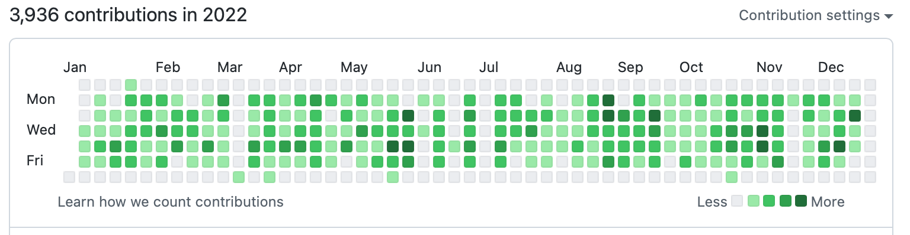
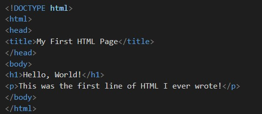

My Web Development Journey: From University Struggles to GitHub Wins
📍 Introduction — Where It All Began
When I first stepped into university, I had heard of HTML and CSS, but I didn’t realize how deep web development could go. Soon, it felt like the tech world had raced ahead — AI, full-stack apps, cloud computing — and I was stuck at the starting line.
💡 It’s never too late to start. The only real mistake is not starting at all.

🎯 The YouTube Trap: My Early Struggles
Like many students, I began with YouTube tutorials — jumping between channels from India, the US, and beyond. I’d start an HTML course, stop halfway, start another, and stop again. This cycle went on for months.
📌 Lesson learned: Watching isn’t the same as doing. You have to build.

⚡ Switching Gears — Building My First Projects
One day I decided to stop waiting for the “perfect time” and just make something. My first projects were:
- Personal portfolio — a page about me and my learning path.
- University landing page — a one-page HTML/CSS site with a hero section, features, and contact area.
📚 Why HTML & CSS Are Still Worth Learning
In 2025, some call HTML/CSS “basic,” but every website is built on them. Knowing them well makes learning tools like React so much easier.
📈 The GitHub Boost — My New Daily Habit
Uploading projects to GitHub was a game-changer. It’s not just backup — it’s a public portfolio and daily motivation tool. Seeing my contribution graph light up pushes me to code every day.
💡 Tip: Commit regularly. Even small changes keep momentum and impress recruiters.
💻 A Simple Snippet — My First HTML
Here’s the very first HTML I wrote — basic but meaningful:
🔮 Where I’m Headed Next
Next: JavaScript for interactivity, followed by backend work (PHP/MySQL or Node.js). My process is simple: learn → build → push to GitHub → share.
🔥 Why You Should Start Your Own Journey
- Don’t wait to “know enough” — start now.
- Tutorials help, but building projects teaches more.
- Tracking progress on GitHub is both proof and motivation.
📚 Helpful Resources I Use
💬 Final Words
Starting was the hardest part. Watching videos didn’t help until I built something and published it. If I can start during university, so can you. The best time to start was yesterday — the second best is today.
📩 Share your GitHub link if you’ve built something small — I’d love to see it!